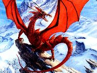
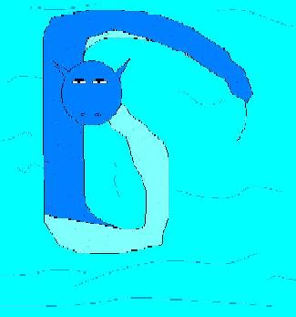
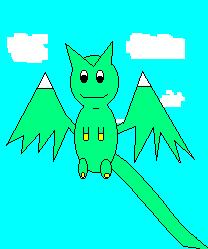
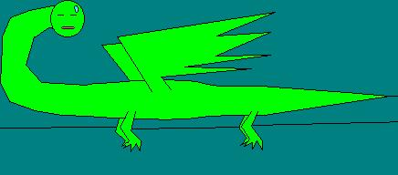
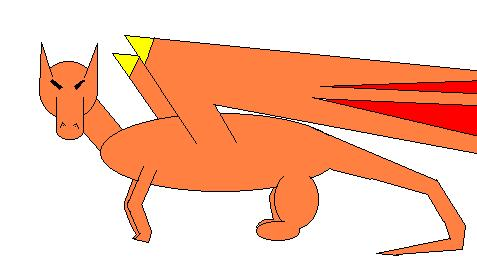

Dragion Group
Dragon Species
There are many different species of dragons. I will list
a few.
Any dragon can be the pure species, or a mix between
two.
Powakon (pO-wa-kon): 
(this is a picture of me, Kai!)
Powakon are the most common dragons.
They are the fire-breathing dragons of
stories and fantasies. All Powakon
can breath fire, regardless of their main element.
Powakon's tails have many spikes
on them, and their head has a great crest. No
matter how feirce Powakon look,
they are very nice.
Searon (C-ron):

Searon are usually main element
water. They are considered Dragons
instead of snakes because of their
element, and most Searon have tiny, useless wings on their backs. When
on land, Searon move like a snake. When in water, Searon look like they
are flying without wings.
Drion (drI-on):

Drion's tails are longer than their
body! No Drions are tame. Drions can not be tamed or trained. Drions come
in different colors. Drions come in; Green, Red, Blue, Teal, Orange, and
Gray.
Chiyae (chE-yay):

Chiyae are almost like Searon.
Chiyae are almost never element water, but more common in element nature.
They are like snakes with little legs. Sometimes they have the beard of
the Chinese dragons. Chiyae can change colors, but not in a wide range.
Their main colors are; green, blue, red, sky blue, violet, and white. They
can change into colors of; teal, black, white, sky blue, sapire blue, yellow
orange, yellow, and light green.
Sleaken (sleh-ken):

Sleaken are cousins of the Chiyae,
yet they are the ultimate in flying and
speed. No matter what their main
element is, they are very good flyers.
Sleaken range in all colors, but
they are most common in orange and bright
colors.